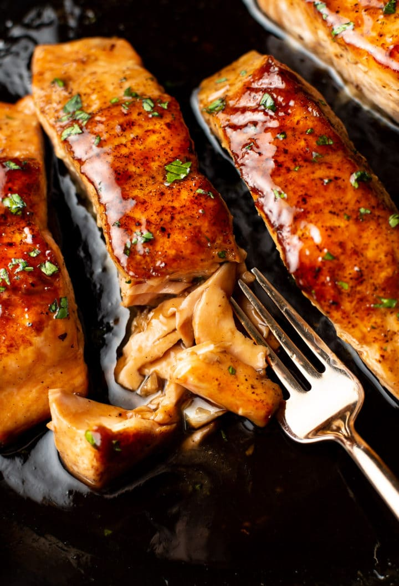

Brown Sugar Salmon

The Best Flavor
There is nothing more well loved than a tasty plate of salmon in my house. But the one above all is this simple but very tasty recipe. The flavor is full bodied and although sweet isn't overpowering. Its safe to say ive turned salmon haters into fenatics over night. The salmon in the end will easily pull apart and melt into your mouth. This recipe is not one to pass up on.
Ingredients
Salmon
- Salmon- 1 pound fresh salmon cut into 4 pieces,season it with salt & pepper to taste
- Olive oil- 1 tablespoon
- Butter- 2 tablespoons divided
Sauce
- Brown sugar- 3 tablespoons
- Soy sauce- 1 tablespoon
- Garlic powder- 1/4 teaspoon
- Lemon juice- 1 tablespoon
- Fresh ginger- 1/2 teaspoon grated
- Worcestershire Sauce- 1 teaspoon
- Chicken broth- 2 tablespoons
- Cornstarch- 1 teaspoon